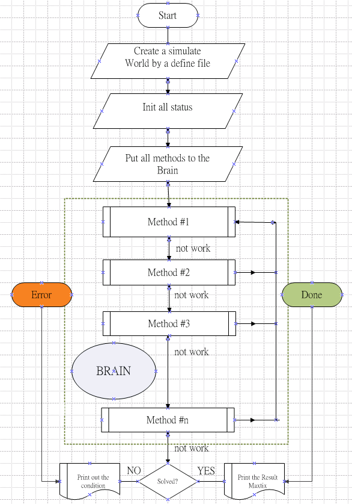

當我們已經在電腦建構好一個數獨模擬世界時，對那些我們以前使用手寫的方式所發現的解數獨方法，我們就可以著手來將其以電腦語言(這裡是 Python)來重新闡述。就術語來說，稱為程式設計(Programming)。所以程式設計可以視為我們在教導電腦如何去執行我們解決問題的方法。
一開始，我們先介紹這個專案整個求解數獨的環境，然後我們再說明一些基本方法。
我們設計了 solve() 這個函數來做整個求解數獨的入口，另外也定義了兩個事件類別，SudokuDon 及 SudokuError，以處理求解過程中發現已經解開數獨或者產生違反數獨規則的狀況。
註解
甚麼是「例外處理(Exception)」？
「例外處理(Exceptions)」是一種事件定義，當構成這個事件的條件滿足時，系統就會停止處理目前的事務，而跳到該事件的處理程序。在這個專案中有兩個主要的例外處理：
當這個數獨已經被解開時，這個例外處理會被叫醒
當求解過程中發現違反數獨規則時，這個例外處理會被叫醒
為了讓整個求解環境能夠知道有多少種求解方法它能夠使用，我們設計了一個類別，SolveMethod。我們以這個類別來將所有的求解方法置入成一個**虛擬大腦**。我們可以將這個虛擬大腦視為是這個美麗山谷的守護神。每當有新進來此山谷者，找不到居住所時，都可以透過祂來選擇出適合的房子，但祂也可能回答：「對不起，我也不知道該如何選擇！」
對**虛擬大腦**而言，每一個解數獨的方法都化為一個 SovleMethod 物件儲存在裡面，這些物件有以下主要屬性：
fun: 解數獨方法的 Python 函數名稱
idx: 方法的排序，從簡單的方法開始到困難的方法依序排列，虛擬大腦將依序一個一個地使用這些方法來解開數獨。
name: 此方法的名稱，使用者可以自訂其名稱
level: 困難度，對人的直覺而言。系統用此來計數解開整個數獨的困難積分。
下面是主要求解函數，solve()，的流程圖：
註解
「有用(work)」或「沒用(not work)」？
一個求解方法如果是「有用」，表示它能夠：
讓一個或多個人找到他們的居所
或者是可讓一間或多間房子知道一個或多個國家的人不能居住在他們的房子
在這張流程圖中，我們知道：
當一個求解方法有用時，設定了一個人的住所或降低了一間房子可居住者的可能性時，整個虛擬大腦會重新回到第一個求解方法來繼續求解。
假如一個求解方法沒用時，它會交給下一個方法來解決。
當到最後一個方法都沒用時，他會離開整個求解環境並說：「我無法解開這個遊戲，抱歉！」
在整個求解過程中，如果發現已解開數獨(Done)或者違反了數獨規則(Error)時，它就會跳離整個求解環境。
fill_only_one_possible:
在每一個房子群組中，檢查每一間房子，是否只有一間房子能夠讓某國的人民居住，如果是，則該間房子必然要讓那國的人民遷入。
fill_last_position_of_group:
當一個房子群組中只剩一間空房時，那必然是只有一個國家的人民尚未入住。
check_obvious_number:
檢查每一個國家中已經定居的國民，看他們所在的位置所交互影響、而尚未有該國人民入住的區塊中，是否可以找到僅剩一間房子容許該國國民來定居，如果是，則可以很明顯地配給該房子給與該國的人民。
check_inobvious_number:
這個求解方法與 check_obvious_number 相同，只是先找到一些區塊的虛擬國民，讓他們以及已定居的國民一起來探測其他尚未有本國國民居住的區塊。
reduce_by_group_number:
如果在一個房子區塊中形成了一個虛擬國民時， 那與這個虛擬國民同方向的房子群組中的其他空房子，就不可能居住這個國民。
update_chain:
當一些房子開始住人以後，會影響一些房子不再能夠允許一些國家的居民，而這些空房子可能因此在一個房子群組中(x軸、y軸、區塊)中產生了一個**鍵鏈(Chain)**。這個方法就是去尋找可能的鍵鏈，並將鍵鏈所影響的空房子減少它們被這些鍵鏈的國民居住的可能。
我們來實作一個只為一個國家的人民來看是否能有一個直覺的方法來為一個尚未有該國住民的區塊找到住所，我們命為 check_obvious_for_a_country(m, num)：
1 def check_obvious_for_a country(m, num): 2 checked = list() 3 for p1 in m.n[num].p: 4 for b in m.b[p1.b].effects: 5 possible = [] 6 if b in checked: 7 continue 8 else: 9 checked.add(b) 10 if num not in m.b[b].possible: 11 continue 12 for p2 in m.b[b].p: 13 if p2.v != 0 or p2.can_see(p1) > 0: 14 continue; 15 if not m.lineX[p2.x].allow(num): 16 continue 17 if not m.lineY[p2.y].allow(num): 18 continue 19 possible.append(p2) 20 if len(possible) == 1: 21 m.setit(possible[0].x, possible[0].y, num, d="Obvious For a Country People")
line#1, 定義一個求解方法, m 是這個遊戲的數獨世界，num 則是一個國家代碼, 可能值為1-9。
line#3, 將每一個已經入住此山谷的此國國民都找出他們的住所。
line#4-9, 檢查每一個尚未被檢查的房子區塊。
line#10-11, 如果此區塊已有該國人民居住，那就不用檢查了。
line#12-19, 檢查此區塊每一個空房是否可以讓該國的人民來居住。如果是，則將該房子放進去可能的名單裡面。
line#20-21, 最後檢查可能的名單中，如果只有一個時，那就表示該房子必然由該國人民來居住。